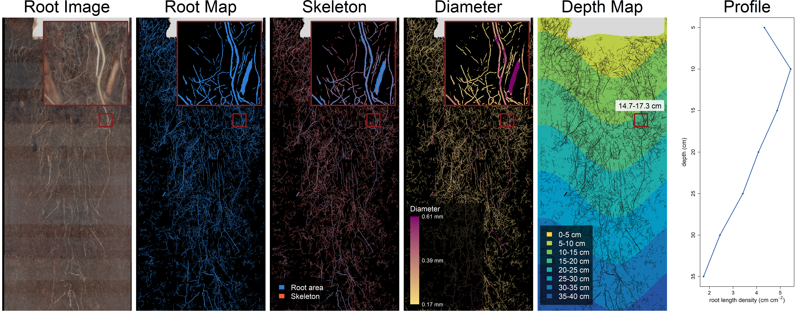
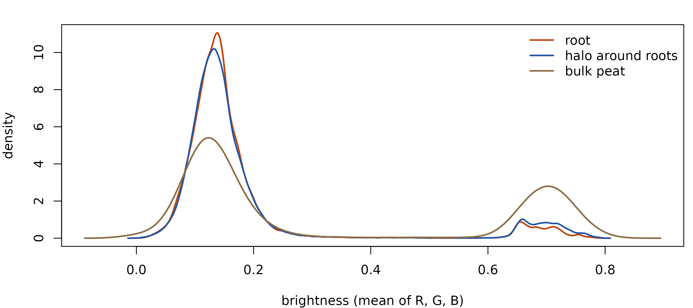

Rootopia: Depth-Resolved Root Trait Analysis for Minirhizotrons and Flatbed Scans in R
Purpose, Standard Workflow, and Extensions
Johannes Cunow
Source:vignettes/Rootopia_Overview_vignette.Rmd
Rootopia_Overview_vignette.RmdIntroduction
How deep a root system reaches decides what it can get at. Water and nitrate move down through a profile and are lost from the top of it, phosphorus stays where it is, and carbon deposited below the plow layer persists longer than carbon deposited above it, so the same total root length means different things depending on the depth it occupies (Freschet et al. 2021). A trait reported as one number per image averages exactly that away.
Roots are buried, and the two standard ways of imaging them each give up something. A flatbed scanner captures washed roots at high resolution under controlled light, which gives morphology but destroys the plant and loses the depth each root grew at. A minirhizotron keeps both the plant and the depth, by imaging soil through the wall of a transparent tube – but it returns that tube’s unrolled curved surface as a flat strip, in which pixel position is not depth. Depth has to be reconstructed from the tube’s diameter, its insertion angle and the scan resolution before any trait can be attributed to a horizon.
Finding the roots in either image is a segmentation problem, and trained models solve it well enough to be used as given — RootDetector (Peters et al. 2023) and RootPainter (Smith et al. 2022) are two of them, and where the examples here came from. What they return is a mask. Turning that mask into root length density per 5 cm interval is not recognition but geometry, and it is the step at which a depth axis is either earned from measured quantities or quietly invented.
Rootopia performs that conversion and measures the traits that follow from it: root length, diameter, surface, branching architecture, network topology, turnover between sessions, and soil color and texture – each per depth interval wherever a depth map exists. The boundary matters in both directions:
-
Segmentation is somebody else’s job.
image_threshold()is the one segmenter here, and it is the simplest kind: it splits foreground from background by brightness alone, in either direction. That is enough for washed roots on a tray of known color and not enough for roots in soil, where wet soil, old root and debris overlap in brightness. A trained model does that job, and handing over to one is a step in the workflow rather than an optional extra. - Depth is computed, not assumed. It comes from the tube geometry and the scan resolution, which are numbers you supply; length estimators are named rather than chosen for you; and every function states which image type it expects.
This chapter covers the three image types and what consumes them, one complete worked depth profile, and each remaining module in turn. Part I is the standard minirhizotron workflow from stitched frames to a depth profile, Part II the modules that attach to it, and Part III the flatbed case, which has no depth axis and goes to architecture instead.
The two pathways
The package covers two imaging setups that share a front end and diverge after it. A minirhizotron sequence is stitched, segmented, and then reduced to traits per depth interval. A flatbed scan has no depth axis, so it goes to architecture instead: branch order, network shape, transport. Only stitching and segmentation are common to both, and segmentation happens outside this package.
Three things sit beside both paths rather than in either. Root angle needs a depth map and a skeleton together. Soil color and texture read the RGB scan and never touch root shape. Turnover compares two sessions. Part II takes each in turn.
Branch order belongs to the flatbed side. Nothing stops you running
it on a tube scan, and branch_order_map() will return a
graph – but a minirhizotron frame is a window onto a cylinder, so a root
leaves and re-enters the field of view and the topology you recover is
the topology of the visible fragments, not of the root system. Order and
network metrics mean what they say on a washed root system laid
flat.
On cleaning. clean_image() is optional
on both sides but not neutral. drop_objects_upto removes
connected components below a pixel count, which deletes scanner speckle
and also deletes genuine fine-root fragments that enter and leave the
frame – on a minirhizotron scan those fragments are real root.
fill_holes_upto closes pinholes inside a mask, which raises
area and lowers the measured diameter variance. Neither is reversible
downstream, so the honest order is: measure once without cleaning, once
with, and report which you used. For branch order the calculation is
different – specks become spurious one-segment components and pinholes
become spurious loops – so there cleaning earns its place.
root_depth_metrics() is not a step in either column. It
is a batch wrapper that runs the whole left-hand path over a folder of
images.
Two patterns cover everything downstream of the depth map, and both
appear below. A trait that reduces to a per-zone sum or mean goes
through terra::zonal() in one call. A trait whose function
needs a whole image goes through depth_zoning(), which
crops the image to one interval, in a loop.
Part I: the standard minirhizotron workflow
This is the path almost every minirhizotron analysis takes, in order: censor the rotation, build a depth map, bin it, measure traits per bin, summarize the profile. Nothing is thinned on the fly here: the example has a skeleton from the segmenter, so the hand-over described above is exercised as it stands. Where a segmenter returns no skeleton, one step is added and the section below shows what it costs. Part II then adds the modules that sit outside this path.
Stitch the frames, if there are several
Before anything else: a tube is often imaged as several overlapping
frames, and a root crossing a frame boundary would otherwise be measured
twice. If each tube is already one image, skip this.
stitch_root_scans() groups files into tubes by a pattern in
the filename, aligns consecutive frames over a band along the
overlapping edge, and blends them into one mosaic per tube. Alignment is
FFT phase correlation (method = "phase");
method = "feature" is accepted but stops with a message,
because keypoint matching has no backend here.
Two arguments decide which files are read and how they are grouped,
and they do different jobs. pattern is a plain substring
that keeps or drops whole files; group_regex is the
expression that pulls the tube identity out of each path. The default
group_regex is already "T0\\d{2}", which
matches labels like T067, so a naming scheme built on
T0xx needs nothing set. Anything else does: a folder named
by plot and tube would use something like
group_regex = "P\\d+_T\\d+".
# See what a folder holds, then pick a range in the same call
stitch_root_scans("path/to/scans", tubes = "ask")
res <- stitch_root_scans(
"path/to/scans",
pattern = ".tiff", # read only these files
group_regex = "T0\\d{2}", # the tube identity inside each file name
blend = "max", # see below: do not average a segmented mask
order_by = "\\d+(?=\\.)", # sort frames on their number, not the file name
report = TRUE
)
res$report # tube | step | dx | dy | peak | overlapThe report has one row per join. peak is how strongly
the two edge bands agree at the shift that was chosen: a normalized
correlation score, near 1 when the overlap matched cleanly and near 0
when the alignment is little better than a guess. It is the column to
check, because a bad join does not announce itself – the mosaic is still
produced, with a seam in the wrong place.
# The ten least trustworthy joins in the run, worst first.
res$report[order(res$report$peak), ][1:10, ]If a mosaic looks wrong, three arguments are worth changing before
anything else. edge_width is the width of the band searched
for the overlap, not the overlap itself, so it must be at least as wide
as the true overlap – an overlap wider than the band cannot be found at
all. preprocess conditions the bands before correlation:
"hann", "grad" or "center" help
on scans with uneven lighting or sparse texture, where plain intensity
correlation locks onto the illumination gradient instead of the roots.
And min_overlap / max_overlap reject a shift
that is physically impossible for your setup, which is the cheapest way
to stop one bad join from propagating.
blend decides how the overlap is combined, and the
choice is not cosmetic. "linear" feathers the two frames
with an alpha ramp, which suits color scans. For a segmented mask use
"max": feathering averages, so a root pixel in one
frame and background in the other becomes a fractional value, and thin
roots ghost wherever alignment is off by a pixel. "max"
takes the union instead, so a pixel is root if either frame called it
root. "overlay" and "overlay_first" let one
frame hide the other outright, and "min" takes the
intersection, which erodes rather than ghosts.
Hand the images to a segmenter
Stitched or not, the next step is not in this package. A scan has to be turned into a root mask. Any tool that writes a binary mask will do; two that are used on minirhizotron images are:
-
RootDetector (Peters et al. 2023) — a
convolutional network. Returns the segmentation and a skeleton in one
pass, and optionally the decay/production/constant coding that
root_turnover(method = "dpc")reads. - RootPainter (Smith et al. 2022) — interactive training, where you correct the model as it learns. Returns a mask, and no skeleton.
Those are examples, not requirements, and nothing below depends on
either. Rootopia reads PNG, JPEG, TIFF, BMP, terra and
raster objects, imager images and plain
arrays, so the format is rarely the obstacle. What matters is which of
the image types below you get back, not which program produced them.
Only one case does not need a trained model: a scan where root and
background differ in brightness alone. image_threshold()
compares each pixel against either a fraction of the image maximum
(method = "global") or a multiple of a local mean
(method = "adaptive"). By default it keeps the pixels at or
above that level, so the bright side is the foreground,
which fits roots on a dark tray. A flatbed scan is normally the reverse,
dark roots on a bright tray, and invert = TRUE moves the
cut to the other side of the pixel value:
# Dark roots on a bright tray.
image_threshold(scan, threshold = 0.4, method = "global",
binary_01 = TRUE, invert = TRUE)
# The adaptive form then asks that a pixel be adaptive_k times darker than its
# surroundings, rather than that much brighter.
image_threshold(scan, method = "adaptive", adaptive_k = 1.15,
window_size = 51, binary_01 = TRUE, invert = TRUE)This works only where brightness alone separates root from background, which in practice means washed roots on a tray of known color. It does not work on a minirhizotron scan: wet soil, old root and organic debris overlap in brightness there, so no single cut and no local multiplier puts a boundary between them, whichever side you keep. That is a property of the image, not a shortcoming of the function, and it is why the hand-over to a trained segmenter is the step above rather than an optional extra.
What comes back is one or more image layers per scan. Which ones depends on the segmenter, and the three the rest of this article uses are described next.
The image layers, and which is which
A segmenter returns one or more image layers per scan, and they are not interchangeable. How many depends on the tool: a mask is the one you always get, a skeleton comes from some segmenters and not others, and the color photograph survives only if the setup recorded it. The three used below are the three a RootDetector run happens to produce, which is why the bundled example has all of them.
Figures here use zoom_plot(), as the step-by-step
vignettes do. These rasters are several thousand pixels wide, and
shrinking one to fit a figure makes the graphics device drop the
one-pixel-wide roots entirely; zoom_plot() draws a
full-image overview with the magnified region outlined, plus that region
at native resolution where thin features survive. frac sets
the inset size, so the magnification is 1 / frac.
# Three layers from one RootDetector run on one tube; layer 2 carries the roots.
data(seg_Oulanka2023_Session03_T067)
data(skl_Oulanka2023_Session03_T067)
data(rgb_Oulanka2023_Session03_T067)
dpi <- 150 # the scan resolution; every cm value below depends on it
# Keep the full 3-band image (0/255) for the mask and depth steps below.
seg_img <- load_flexible_image(seg_Oulanka2023_Session03_T067,
output_format = "spatrast", scale = "none")
# load_flexible_image() also selects the root channel and binarizes it to 0/1
# in one call, so pixel sums and the void mask (abs(root_layer - 1)) are
# meaningful.
root_layer <- load_flexible_image(seg_Oulanka2023_Session03_T067,
output_format = "spatrast",
scale = "binary", select_layer = 2)
# The one-pixel center line, as this segmenter supplies it.
skl <- load_flexible_image(skl_Oulanka2023_Session03_T067,
output_format = "spatrast",
scale = "binary", select_layer = 2)
# The color functions read the photograph as it comes; drawing it wants 0-1.
# `scale` does both conversions, so neither is done by hand.
rgb <- load_flexible_image(rgb_Oulanka2023_Session03_T067,
output_format = "spatrast", scale = "none")
rgb_disp <- load_flexible_image(rgb_Oulanka2023_Session03_T067,
output_format = "spatrast", scale = "to_01")Each carries different information, so each feeds different functions.
| Image | What it is | What it is for |
|---|---|---|
| RGB | the photograph | color, texture, soil class |
| Segmentation | solid root mask, 0/1 | area, diameter, cleaning |
| Skeleton | one-pixel center line | length, tips, branching, root angle |
Only the mask is guaranteed. Where no skeleton comes back,
skeletonize_image() thins the mask into one, so a missing
skeleton is never a blocker – but a supplied skeleton and a thinned one
are not the same picture, and the section below compares them before
anything downstream uses either.
Which image feeds which function
This is the table to keep. Passing the wrong type usually gives a wrong number rather than an error.
| Function | Needs | Note |
|---|---|---|
count_pixels() |
segmentation | area, not length |
root_length() |
skeleton |
skeletonize = TRUE thins a mask first |
branch_order_map() |
both | also where tips and forks come from |
root_diameter() |
both | mask for widths, skeleton for where |
network_metrics() |
segment table | from branch_order_map()$edges
|
root_transport() |
segment table | needs diameters, so needs mask =
|
root_scape_metrics() |
segmentation | patch structure of solid root (needs landscapemetrics) |
create_depthmap() |
any raster | reads the grid, not the values |
tube_coloration() |
RGB | three bands required |
classify_soil_rgb() |
RGB | per-pixel material class |
analyze_soil_texture() |
RGB | GLCM texture (needs glcm) |
root_turnover() |
two scans, or one DPC | per tc_method
|
Throughout this article mask means the segmentation:
the solid 0/1 image in which every root pixel is 1. It is what the
mask = argument of the branching functions and the first
argument of root_diameter() expect.
root_diameter() is the one to
understand. Diameter comes from a distance transform of that
solid image: every root pixel is labeled with its distance to the
nearest background pixel, which is the radius of the largest circle that
fits inside the root there, and diameter is twice that. The skeleton
then says which of those pixels to report, so each root
contributes its center line once rather than its whole width. Pass only
a skeleton and every diameter collapses to about one pixel. The same
applies to mask = in the branching functions, where the
continuation rule and the order-1 seed both depend on diameter.
select_layer applies to that first argument only, not to
skeleton_img. It picks the band to read when the mask
arrives as a multi-layer image; NULL passes every layer
through, which is right when the mask is already one band, as
root_layer is here.
Censor the rotation
A tube can turn between sessions, and the scanner does not cover a full circle, so roots near the edge of the scan are visible in one session and not the next. Left alone that is a systematic bias which looks like growth or death. Cropping every session to a common window of rows removes it, and it is standard procedure rather than an option.
# The window has to be centered on the tube's rotational zero, and that is a
# per-scan quantity: estimate_rotation_center() locates it from the tape on the
# tube's upper side, and estimate_rotation_shift() measures how far a later
# session has turned relative to the first, which is what you add to the first
# session's center. Both need RStoolbox and imagefx, so the midpoint stands in
# here to keep this article runnable on a thin install.
r0 <- round(dim(root_layer)[1] / 2, 0)
censored <- rotation_censor(
root_layer,
center_offset = r0,
cut_buffer = 0.02,
fixed_width = 900, # rows kept; must fit inside the image height
fixed_rotation = TRUE, # equal width across sessions is what makes
overlay = TRUE, # counts comparable
main = "Rotation censor: kept (green) vs cut (red)"
)
fixed_rotation = TRUE forces exactly
fixed_width rows, which is what you want when comparing
sessions: equal width is what makes counts comparable.
fixed_rotation = FALSE instead cuts in proportion to a
measured offset, so the output width varies between images. In a real
run the order is: estimate_rotation_center() once per tube
on the first session, estimate_rotation_shift() for every
later session against it, and the sum passed as
center_offset so the same band of tube is kept throughout.
center_offset is a row index here; it is a fraction of the
image height only in create_depthmap(), which is a
different argument with the same name.
The rest of this article works on the uncensored image, so the depth figures cover the whole scan – which is still less than a full turn of the tube, since the scanner does not reach all the way around.
The skeleton: supplied, or made here
Some segmenters return a skeleton along with the mask; others return
only the mask. Both cases work. Where a skeleton comes back, use it.
Where it does not, skeletonize_image() thins the
segmentation into one: it strips pixels off the edges of each root,
layer by layer, until a single connected line of pixels is left down the
middle, which is the Zhang-Suen thinning.
The two are not the same picture, and the difference is not noise. A thinned skeleton follows the segmentation exactly, so a pinhole in the mask becomes a small loop and a ragged edge can grow a short spur that is not a root. A segmenter that predicts the center line directly is not bound by the mask it also predicts, so it can disagree with its own mask.
That difference is worth looking at on your own scans, and it cannot
honestly be shown on the example data here, which is downsampled to keep
the package installable. data-raw/make-figures.R draws it
from full-resolution originals: fill in the two paths at the top and run
it, and the figure appears below.
No comparison figure found. data-raw/make-figures.R
writes one; fill in the two scan paths at the top of that script and run
it.
Whichever you use, use one consistently. Mixing a supplied skeleton in one session with a thinned one in the next puts a step into a time series that has nothing to do with roots. Everything below uses the supplied skeleton.
Root diameter
Diameter needs both images at once: the mask gives the width, the
skeleton says which pixels to report. root_diameter()
returns the local thickness across the whole scan as well as the
per-skeleton-pixel diameters, so it is worth looking at before reducing
it to a per-interval mean.
diam_result <- root_diameter(
root_layer,
skeleton_img = skl,
unit = "cm",
dpi = dpi, # not optional: the default is 300
select_layer = NULL
)
# root thickness
zoom_plot(diam_result$distance_map_rast, frac = 0.1)

From pixels to depth
The depth map
depth_map <- create_depthmap(
img = root_layer,
geometry = "tube", # "window" planar, "flat" no depth axis
tube_thicc = 7, # cm - measure your own tube
angle_from_vertical = 45, # degrees from vertical; 0 is upright
dpi = dpi,
start_soil = 2.9, # cm - from in-situ calibration
center_offset = 0.5 # tube top halfway down the image
)
terra::plot(depth_map, main = "Depth map (cm)")
Every argument above except geometry is a measurement,
taken on the tube or read off the scanner, and each one fails in its own
way if it is wrong.
-
angle_from_vertical— the installation angle, in degrees from vertical, so 0 is an upright tube and 90 a horizontal one. From the field notes. -
tube_thicc— the inner diameter in centimeters, measured on the tube. If it ordpiis wrong the curvature wave cannot span the image height and the function stops withWrong Tube Diameter, which is the one error here that catches itself. -
dpi— the scan resolution, from the scanner settings. Every centimeter in this article depends on it. -
start_soil— where the soil surface sits along the tube, in centimeters, from in-situ calibration. It is subtracted from every depth, so an error shifts the whole profile by that amount and changes nothing else.estimate_soil_surface()estimates it from the image in pixels; convert withcm = px * 2.54 / dpi. -
center_offset— where the top of the tube sits across the image height, as a fraction of one circumference, so 0.5 is halfway down. From the installation, or fromestimate_rotation_center().
Depth also runs along the image width. A scan with the soil surface at the top needs a quarter turn first; nothing errors if it is the wrong way round, the map is simply built along the wrong axis.
What the insertion angle does
A tube lying at an angle gains depth in two ways at once, and the
insertion angle sets how much of each. Moving along the tube’s length
takes you deeper, and so does moving around its circumference from the
top of the tube to the bottom. Standing the tube upright removes the
first and leaves only the second; laying it flat does the reverse. Both
terms are visible in the same map with
geometry = "tube".
# A 7 cm tube over 25 cm of its length: depth runs along the width, the
# circumference down the height, as in a real scan.
tube <- 7; sdpi <- 60
nr <- round(tube * pi * sdpi / 2.54, 0) - 1 # one full turn
demo <- terra::rast(matrix(0, nrow = nr,
ncol = round(25 * sdpi / 2.54, 0)))
# Axes in centimeters rather than pixels, so the two directions can be read
# against each other.
terra::ext(demo) <- c(0, 25, 0, tube * pi)
angs <- c(15, 45, 75)
maps <- lapply(angs, function(a)
create_depthmap(demo, geometry = "tube", tube_thicc = tube,
angle_from_vertical = a, dpi = sdpi, center_offset = 0))
lims <- range(vapply(maps, function(m) terra::minmax(m)[, 1], numeric(2)))
op <- graphics::par(mfrow = c(3, 1))
for (i in seq_along(angs))
terra::plot(maps[[i]], range = lims, maxcell = Inf,
xlab = "along the tube (cm)",
ylab = "around the tube (cm)",
main = sprintf("%d deg from vertical", angs[i]))
graphics::par(op)Measuring the two terms off the function needs one more thing: a length of tube to measure the depth gain over. Taking 7 cm of tube, the same as the diameter, makes the two terms two halves of one budget.
budget <- terra::rast(matrix(0, nrow = nr,
ncol = round(tube * sdpi / 2.54, 0)))
ang_seq <- seq(0, 90, by = 5)
terms <- vapply(ang_seq, function(a) {
m <- terra::as.matrix(
create_depthmap(budget, geometry = "tube", tube_thicc = tube,
angle_from_vertical = a, dpi = sdpi, center_offset = 0),
wide = TRUE)
c(circ = diff(range(m[, 1])), len = diff(range(m[1, ])))
}, numeric(2))
op <- graphics::par(mar = c(4, 4, 2, 1))
plot(ang_seq, terms["circ", ], type = "l", lwd = 2, col = "coral3",
ylim = c(0, max(terms)), xlab = "angle from vertical (deg)",
ylab = "depth spanned (cm)")
graphics::lines(ang_seq, terms["len", ], lwd = 2, col = "steelblue4")
graphics::abline(v = 45, col = "grey70", lty = 3)
graphics::legend("top", bty = "n", lwd = 2, cex = 0.8,
col = c("steelblue4", "coral3"),
legend = c("along 7 cm of tube length",
"around a 7 cm tube"))
graphics::par(op)Both curves are depth spanned in centimeters over the same 7 cm of tube: 7 cm around the circumference, 7 cm along the length. That makes them two halves of one budget. They cross at 45 degrees at the same value, 4.95 cm, and at either end one of them holds all 7 cm while the other holds none.
Near upright, almost all of the depth is the left-to-right gradient
along the tube and the circumference sits at nearly one depth, so the
banding is faint. Near horizontal it is the reverse: the banding spans a
full tube diameter while the length gradient flattens. The two curves
cross at 45 degrees, the angle most minirhizotron work uses and the one
angle at which the two terms cannot be told apart. With
geometry = "window" the circumference term is dropped and
only the length term remains; with "flat" both go, and
every pixel shares one depth.
Binning
depth_bins <- binning(depthmap = depth_map, nn = 5, round_option = "floor")
depths <- sort(unique(terra::values(depth_bins, mat = FALSE)))
depths <- depths[!is.na(depths) & depths >= 0]
depths
#> [1] 0 5 10 15 20 25 30 35 40 45 50 55 60
terra::plot(depth_bins, main = "Depth bins")
round_option decides what a bin’s label means, and the
two options label the same interval differently. "floor"
computes nn * floor(depth / nn), so a label is the
upper edge of its interval: with nn = 5
the bin labeled 5 holds depths 5 up to 10. The default
"rounding" computes nn * round(depth / nn), so
a label is the interval’s center: the bin labeled 5
holds 2.5 to 7.5, and the bin labeled 0 holds -2.5 to 2.5, which is half
a bin wide once negative depths are dropped. Per-bin densities are
unaffected either way, since they divide by each bin’s own measured
area, but any total that multiplies a per-bin value by nn
is biased by that half-width bin.
Traits per depth bin
Pixel counts reduce to a per-zone sum, so the whole profile comes out of one call.
root_px <- terra::zonal(root_layer, depth_bins, "sum", na.rm = TRUE)
void_px <- terra::zonal(abs(root_layer - 1), depth_bins, "sum", na.rm = TRUE)
colnames(root_px) <- c("depth", "rootpx")
colnames(void_px) <- c("depth", "voidpx")
depth_data <- merge(root_px, void_px, by = "depth")
depth_data <- depth_data[depth_data$depth >= 0, ]
depth_data$area_cm2 <- (depth_data$rootpx + depth_data$voidpx) *
(2.54 / dpi)^2
head(depth_data, 4)
#> depth rootpx voidpx area_cm2
#> 2 0 10203 432006 126.7980
#> 3 5 58108 426762 139.0305
#> 4 10 50946 433824 139.0019
#> 5 15 47220 437614 139.0202Root length cannot go through zonal() at all, for a
plainer reason: zonal() applies a summary to the
values in each zone, and length is not a property of pixel
values but of how the pixels are arranged. root_length()
has to see a connected skeleton. So the loop below does the same job
zonal() does – one number per depth bin – with
depth_zoning() supplying the crop zonal()
would have supplied internally, and any function at all in place of a
summary statistic.
One consequence of taking it bin by bin: Kimura’s estimator weights diagonal and orthogonal steps differently, so it is not additive, and the per-bin lengths do not sum to the length of the whole skeleton. That is a property of the estimator rather than a leak, but it means a profile total and a whole-image total are different numbers and should not be compared.
length_by_depth <- do.call(rbind, lapply(depths, function(d) {
skl_d <- depth_zoning(skl, depth_map = depth_bins, depth = d)
data.frame(depth = d,
rootlength = root_length(skl_d, unit = "cm", dpi = dpi,
show_messages = FALSE))
}))
depth_data <- merge(depth_data, length_by_depth, by = "depth")
depth_data$rootlength.density <- depth_data$rootlength / depth_data$area_cm2
head(depth_data, 4)
#> depth rootpx voidpx area_cm2 rootlength rootlength.density
#> 1 0 10203 432006 126.7980 47.26035 0.3727215
#> 2 5 58108 426762 139.0305 232.97663 1.6757226
#> 3 10 50946 433824 139.0019 194.66974 1.4004829
#> 4 15 47220 437614 139.0202 187.38270 1.3478808Diameter is a per-pixel value, so it reduces with
zonal() like the counts, once diam_result’s
raster is snapped onto the depth grid.
terra::ext(diam_result$diameter_rast) <- terra::ext(depth_bins)
diam_by_depth <- terra::zonal(diam_result$diameter_rast, depth_bins,
"mean", na.rm = TRUE)
colnames(diam_by_depth) <- c("depth", "avg.diameter")
depth_data <- merge(depth_data, diam_by_depth, by = "depth")
head(depth_data, 4)
#> depth rootpx voidpx area_cm2 rootlength rootlength.density avg.diameter
#> 1 0 10203 432006 126.7980 47.26035 0.3727215 0.03560018
#> 2 5 58108 426762 139.0305 232.97663 1.6757226 0.03746447
#> 3 10 50946 433824 139.0019 194.66974 1.4004829 0.03735308
#> 4 15 47220 437614 139.0202 187.38270 1.3478808 0.03611764Profile summaries
# Mean rooting depth - depth-weighted mean
ok <- depth_data[!is.na(depth_data$rootlength.density) &
depth_data$rootlength.density > 0, ]
mrd_val <- MRD(w = ok$depth, roots = ok$rootlength.density)
# Total length is a sum of lengths. Summing a density and multiplying by the
# bin width is not a total of anything: density is cm of root per cm2 of
# window, so the product has no interpretation. The areal density of the whole
# profile is the total length over the total observed area.
total_len <- sum(depth_data$rootlength, na.rm = TRUE)
mean_rld <- total_len / sum(depth_data$area_cm2, na.rm = TRUE)
cat(sprintf("MRD: %.2f cm | total length: %.1f cm | mean RLD: %.4f cm cm-2\n",
mrd_val, total_len, mean_rld))
#> MRD: 20.64 cm | total length: 1226.7 cm | mean RLD: 0.7668 cm cm-2MRD() stops on NA, on negative root values,
and on an all-zero profile rather than returning a number built from
part of the data, which is why the profile is filtered first and the
filtering stays visible.
library(ggplot2)
ggplot(depth_data, aes(x = depth, y = rootlength.density)) +
geom_col(fill = "steelblue4") +
coord_flip() +
scale_x_reverse() +
theme_minimal() +
labs(x = "Soil depth (cm)", y = "Root length density (cm / cm2)",
title = "Root length density profile")
depth_data$Tube <- "T067"
depth_data$rootpx.cumulative <- root_accumulation(
depth_data,
group = "Tube",
depth = "depth",
variable = "rootpx",
stdrz = "additive" # counts: cumsum(x)
# additive: cumsum(x) / max(cumsum(x))
# relative: cumsum(x) / sum(cumsum(x))
)
ggplot(depth_data, aes(x = depth, y = rootpx.cumulative)) +
geom_line(color = "steelblue4") +
geom_point(color = "steelblue4") +
theme_minimal() +
labs(x = "Depth (cm)", y = "Cumulative root pixel fraction",
title = "Root accumulation with depth")
All three options accumulate down the profile; stdrz
only picks the denominator applied afterwards, and the names do not
describe what they do. "counts" leaves the cumulative sum
raw. "additive" divides it by its own maximum – that is, by
the profile total – so the curve runs to 1 and tubes with very different
abundance compare by shape alone. This is the one that gives a
cumulative share, despite the name. "relative" divides by
the sum of the cumulative values, a quantity with no obvious
interpretation: the curve ends well below 1 and its endpoint depends on
how many bins there are, so two profiles binned differently are not
comparable. Use "additive" unless you have a specific
reason, and read the documentation rather than the option name.
The whole workflow in one figure
Each step above produced a raster on the same grid, so they can be laid side by side: the scan, what the segmenter found in it, the center lines, the local thickness, the depth the geometry assigns to each pixel, and the profile those five produce. Depth runs along the image width, so a quarter turn puts it down the page and the panels stand next to each other.
# Order is left to right. Drop an entry to leave that panel out.
panels <- c("rgb", "root", "skel", "diam", "depth", "profile")
rot <- function(r) {
r <- terra::flip(terra::t(r), direction = "horizontal")
terra::ext(r) <- c(0, ncol(r), 0, nrow(r))
r
}
# Layer 1 of the segmentation carries roots and foreign objects, layer 2 roots
# only, so a pixel in the first and not the second is tape.
seg_max <- max(terra::global(seg_img, "max", na.rm = TRUE)[[1]])
is_masked <- (seg_img[[1]] / seg_max > 0.5) & (seg_img[[2]] / seg_max < 0.5)
# A gamma below 1 lifts the mid-tones without clipping the bright end.
root_soft <- root_layer^0.6
# distance_map_rast is the local diameter in pixels across the whole mask, so
# thickness already covers the root rather than sitting on its center line.
diam_mm <- diam_result$distance_map_rast * 2.54 / dpi * 10
diam_mm[diam_mm <= 0] <- NA
# Root area 1, center line 2.
skl_cls <- root_layer
terra::ext(skl_cls) <- terra::ext(skl)
skl_cls[skl == 1] <- 2
full <- list(rgb = rgb_disp^0.7, root = root_soft, skel = skl_cls,
diam = diam_mm, depth = depth_bins)
for (nm in c("root", "skel", "diam")) full[[nm]][is_masked] <- NA
full <- lapply(full, rot)
# Aggregating to about the on-page pixel count first means terra never drops
# pixels while drawing, which is what loses one-pixel-wide roots.
afun <- c(rgb = "mean", root = "max", skel = "max", diam = "max", depth = "mean")
panel <- lapply(names(full), function(n)
terra::aggregate(full[[n]], fact = 4, fun = afun[[n]], na.rm = TRUE))
names(panel) <- names(full)
area_ramp <- grDevices::colorRampPalette(c("black", "#2E7DD1"))(100)
black_ramp <- c("black", "black")
skel_cols <- c("black", "#2E7DD1", "#FF5A36")
diam_cols <- grDevices::colorRampPalette(c("#f5e07a", "#80066b"),
space = "Lab")(100)
band_cols <- grDevices::colorRampPalette(
c("#FFD92F", "#66BD63", "#00A6CA", "#2455A4"))(length(depths))
# Roots over the depth bands: transparent at 0, near-black at 1.
root_ramp <- grDevices::rgb(0.07, 0.07, 0.07, alpha = seq(0, 1, length.out = 100))
leg_bg <- grDevices::adjustcolor("black", 0.65)
mask_col <- "grey85"
diam_rng <- as.numeric(stats::quantile(terra::values(panel$diam, mat = FALSE),
c(0.02, 0.98), na.rm = TRUE))
mar_p <- c(0.4, 0.4, 1.8, 0.4)
# ---- zoom inset ----
zoom_on <- TRUE
# c(across, down) as fractions of the panel. "densest" instead searches for the
# window holding the most skeleton pixels, which moves between scans; a fixed
# position is reproducible, and this one is the position used throughout.
zoom_ctr <- c(0.8, 0.35)
zoom_w_default <- 0.10
# Window width per panel, as a fraction of the panel width. Magnification in a
# panel is inset_w / its entry, so each panel can be zoomed separately.
zoom_w <- c(rgb = zoom_w_default, root = zoom_w_default,
skel = zoom_w_default, diam = zoom_w_default,
ang = 0.08, depth = zoom_w_default)
inset_w <- 0.62
inset_pos <- "topright" # topright, topleft, bottomright, bottomleft
zoom_col <- "firebrick4"
zoom_lwd <- 2
W <- ncol(full$root); H <- nrow(full$root)
zw <- zoom_w_default * W
iw <- inset_w * W
pad <- 0.03 * W
ix <- if (grepl("right", inset_pos)) c(W - pad - iw, W - pad) else c(pad, pad + iw)
iy <- if (grepl("top", inset_pos)) c(H - pad - iw, H - pad) else c(pad, pad + iw)
inset_e <- terra::ext(ix[1], ix[2], iy[1], iy[2])
if (identical(zoom_ctr, "densest")) {
# Count skeleton pixels in coarse blocks, sum them over a window-sized
# neighborhood, and take the best window that does not sit under the inset.
step <- 10
dens <- terra::aggregate((full$skel == 2) * 1, fact = step, fun = "sum",
na.rm = TRUE)
wk <- 2 * round(zw / step / 2) + 1
dens <- terra::focal(dens, w = wk, fun = "sum", na.rm = TRUE)
xy <- terra::xyFromCell(dens, seq_len(terra::ncell(dens)))
v <- terra::values(dens, mat = FALSE)
under <- xy[, 1] > inset_e[1] - zw & xy[, 1] < inset_e[2] + zw &
xy[, 2] > inset_e[3] - zw & xy[, 2] < inset_e[4] + zw
edge <- xy[, 1] < zw / 2 | xy[, 1] > W - zw / 2 |
xy[, 2] < zw / 2 | xy[, 2] > H - zw / 2
v[under | edge] <- NA
best <- xy[which.max(v), ]
zoom_ctr <- c(best[1] / W, 1 - best[2] / H)
}
# One square window per panel, all centered on zoom_ctr, moved inward if the
# window would hang over the panel edge.
make_win <- function(w) {
h <- w * W / 2
x <- min(max(zoom_ctr[1] * W, h), W - h)
y <- min(max((1 - zoom_ctr[2]) * H, h), H - h)
terra::ext(x - h, x + h, y - h, y + h)
}
wins <- lapply(zoom_w, make_win)
win <- wins$depth
cx <- (win[1] + win[2]) / 2
# new = TRUE starts the inset on its black backdrop, FALSE adds a layer on top.
draw_inset <- function(r, win, new = TRUE, ...) {
if (!zoom_on) return(invisible(NULL))
if (new) graphics::rect(inset_e[1], inset_e[3], inset_e[2], inset_e[4],
col = "black", border = NA)
w <- terra::crop(r, win); terra::ext(w) <- inset_e
if (terra::nlyr(w) == 3) {
terra::plotRGB(w, r = 1, g = 2, b = 3, scale = 1, add = TRUE,
axes = FALSE, maxcell = Inf)
} else {
terra::plot(w, add = TRUE, legend = FALSE, axes = FALSE, maxcell = Inf, ...)
}
graphics::rect(inset_e[1], inset_e[3], inset_e[2], inset_e[4],
border = zoom_col, lwd = zoom_lwd)
graphics::rect(win[1], win[3], win[2], win[4],
border = zoom_col, lwd = zoom_lwd)
}
draw <- list()
draw$rgb <- function() {
terra::plotRGB(panel$rgb, r = 1, g = 2, b = 3, scale = 1, axes = FALSE,
maxcell = Inf, mar = mar_p)
draw_inset(full$rgb, win = wins$rgb)
graphics::mtext("Scan", side = 3, line = 0.4)
}
draw$root <- function() {
terra::plot(panel$root, col = area_ramp, colNA = mask_col, range = c(0, 1),
legend = FALSE, axes = FALSE, maxcell = Inf, mar = mar_p)
draw_inset(full$root, win = wins$root, col = area_ramp,
colNA = mask_col, range = c(0, 1))
graphics::mtext("Segmentation", side = 3, line = 0.4)
}
draw$skel <- function() {
terra::plot(panel$skel, breaks = c(-0.5, 0.5, 1.5, 2.5), col = skel_cols,
colNA = mask_col, legend = FALSE, axes = FALSE, maxcell = Inf,
mar = mar_p)
draw_inset(full$skel, win = wins$skel, breaks = c(-0.5, 0.5, 1.5, 2.5),
col = skel_cols, colNA = mask_col)
graphics::legend("bottomleft", legend = c("root", "skeleton"), bty = "n",
fill = skel_cols[2:3], border = NA, bg = leg_bg,
text.col = "white", cex = 0.65, inset = 0.02)
graphics::mtext("Skeleton", side = 3, line = 0.4)
}
draw$diam <- function() {
terra::plot(panel$root, col = black_ramp, colNA = mask_col, range = c(0, 1),
legend = FALSE, axes = FALSE, maxcell = Inf, mar = mar_p)
terra::plot(panel$diam, col = diam_cols, range = diam_rng, legend = FALSE,
axes = FALSE, maxcell = Inf, add = TRUE)
draw_inset(full$root, win = wins$diam, col = black_ramp,
colNA = mask_col, range = c(0, 1))
draw_inset(full$diam, win = wins$diam, new = FALSE, col = diam_cols,
range = diam_rng)
bx <- 0.08 * W; bw <- 0.10 * W; by <- 0.04 * H; bh <- 0.22 * H
graphics::rect(bx - 0.05 * W, by - 0.02 * H, 0.72 * W, by + bh + 0.05 * H,
col = leg_bg, border = NA)
graphics::rasterImage(grDevices::as.raster(matrix(rev(diam_cols), ncol = 1)),
bx, by, bx + bw, by + bh)
graphics::text(bx + bw + 0.04 * W, by + bh * c(0, 0.5, 1), adj = c(0, 0.5),
col = "white", cex = 0.6,
labels = format(c(diam_rng[1], mean(diam_rng), diam_rng[2]),
digits = 2))
graphics::text(bx - 0.03 * W, by + bh + 0.03 * H, "mm", adj = c(0, 0.5),
col = "white", cex = 0.65)
graphics::mtext("Diameter", side = 3, line = 0.4)
}
draw$depth <- function() {
terra::plot(panel$depth, col = band_cols, colNA = mask_col, legend = FALSE,
axes = FALSE, maxcell = Inf, mar = mar_p)
terra::plot(panel$root, col = root_ramp, range = c(0, 1), legend = FALSE,
axes = FALSE, maxcell = Inf, add = TRUE)
# Depth changes smoothly, so an inset would show one flat band. The window is
# marked instead, with the depth range it covers.
if (zoom_on) {
graphics::rect(win[1], win[3], win[2], win[4], border = zoom_col,
lwd = zoom_lwd)
d_rng <- range(terra::values(terra::crop(full$depth, win), mat = FALSE),
na.rm = TRUE)
lab <- sprintf("%.1f-%.1f cm", d_rng[1], d_rng[2])
tw <- graphics::strwidth(lab, cex = 0.65)
th <- graphics::strheight(lab, cex = 0.65)
tx <- min(max(cx, tw / 2 + th), W - tw / 2 - th)
ty <- min(win[4] + th, H - 2 * th)
graphics::rect(tx - tw / 2 - th / 2, ty - th / 2,
tx + tw / 2 + th / 2, ty + th * 1.5,
col = grDevices::adjustcolor("white", 0.85), border = NA)
graphics::text(tx, ty, lab, adj = c(0.5, 0), cex = 0.65)
}
graphics::legend("bottomleft", bty = "n", fill = band_cols, border = NA,
bg = leg_bg, text.col = "white", cex = 0.55, inset = 0.02,
legend = paste0(depths, " cm"))
graphics::mtext("Depth bins", side = 3, line = 0.4)
}
draw$profile <- function() {
graphics::par(mar = c(4, 4, 1.8, 1))
plot(depth_data$rootlength.density, depth_data$depth, type = "o", pch = 16,
ylim = rev(range(depth_data$depth)), col = "#2455A4",
xlab = expression("cm cm"^-2), ylab = "depth (cm)", cex.axis = 0.8)
graphics::mtext("Profile", side = 3, line = 0.4)
}A figure rendered from your own scans takes precedence over the
bundled example. overview_figure.R writes one; put it at
vignettes/figures/overview_panels.png and the next chunk
includes it instead of recomputing. With no such file the bundled scan
is used, which is what makes this article reproducible from the package
alone.

op <- graphics::par(mfrow = c(1, length(panels)), mar = mar_p)
for (pn in panels) draw[[pn]]()
graphics::par(op)The last panel is the point of the other five. Everything to its left is an image; it is the only one with a soil depth axis, and it is what the rest of this article compares between tubes, between sessions and between treatments.
The same profile over a folder
result <- root_depth_metrics(
path_seg = "scans/segmented/2023_06/",
path_skl = "scans/skeleton/2023_06/",
tube_names = ids, # one unique id per file
dpi = 150,
geometry = "tube",
insertion_angles = 45, # degrees from vertical
tube_diameter_cm = 7,
soil_starts = 2.9, # cm
depth_interval_cm = 5,
bin_round = "floor",
session = "2023_06"
)path_skl is optional; left out, each mask is thinned
internally, which adds the cost of a skeletonization pass per image and
is the single slowest thing this wrapper can be asked to do over a large
folder. Supply the segmenter’s own skeletons if you have them. Branching
order, root angle, color and landscape metrics are separate
calc_* switches, all off by default because each costs real
time too.
Part II: minirhizotron extensions
Everything here still works on a minirhizotron tube, and each section attaches to the path Part I walked: another trait from the same scan, a second session, or the color channels rather than the root shape. The order runs from closest to that path to furthest from it. Part III then changes the imaging setup altogether.
Root angle
Two things have to exist before an angle means anything, and the first is a direction per root pixel. It comes from a D8 pass over the depth map restricted to the skeleton: each center-line pixel is assigned whichever of its eight neighbors the depth field falls toward, giving one of eight compass classes. The second is a reference direction to score it against, and that is where the assumption sits: the reference is the direction that gets a root away from the tube wall and downward fastest, so the whole measure is read from a gravitropic standpoint. A root growing along a nutrient patch or around a stone is not doing worse by this measure in any biological sense; it is simply not doing what gravity would predict.
deep_drive() builds both and reports the agreement
between them: the fraction of root pixels heading the direction the
depth field says is steepest down. It takes an AngleMap if
you have one from elsewhere, and computes it from DepthMap
and RootMap when you do not, which is the usual case.
dd <- deep_drive(DepthMap = depth_map, RootMap = skl)
cat(sprintf("deep_drive: %.3f of root pixels head the deepest way\n", dd))
#> deep_drive: 0.260 of root pixels head the deepest wayOne number between 0 and 1, so it compares across tubes. It is an agreement score rather than a deviation: a pixel pointing 45 degrees off the steepest direction counts exactly as wrong as one pointing 180 degrees away, since the D8 classes are compared for equality. Two stands could therefore score the same while one grows mostly sideways and the other mostly upward. Weighting each pixel by its angular distance from the reference would separate those, and it would turn the statistic into a mean deviation in degrees; that is not what the function does today, and it is the obvious extension if the distinction matters to you.
It needs a real depth gradient, so it means nothing on a flatbed
scan. The batch wrapper reports it as deep_drive alongside
mean.steepness.angle.
return = "all" keeps the intermediate rasters, and the
three that matter sit next to each other: the center lines the
directions are read from, the depth field that defines which way is
down, and the direction assigned to each skeleton pixel.
dd_all <- deep_drive(DepthMap = depth_map, RootMap = skl, return = "all")
# Only downward directions occur on a tube installed at an angle, so the three
# upward classes are left transparent rather than given a color nothing uses.
ang_brk <- seq(-22.5, 337.5, by = 45)
ang_use <- c(90, 135, 180, 225, 270)
ang_cols <- rep("#00000000", 8)
ang_cols[ang_use / 45 + 1] <- c("#FFD60A", "#4D7CFF", "#3DDC84",
"#E0218A", "#00E5FF")
a_skl <- terra::aggregate(rot(skl), fact = 4, fun = "max", na.rm = TRUE)
a_depth <- terra::aggregate(rot(depth_bins), fact = 4, fun = "mean", na.rm = TRUE)
a_ang <- terra::aggregate(dd_all$angle_map, fact = 4, fun = "modal",
na.rm = TRUE)
# Same window, same inset placement as the workflow figure, so the three
# panels can be read against it. wins$ang is the tighter window, because a D8
# class map is only legible a few pixels at a time.
f_skl <- rot(skl)
f_depth <- rot(depth_bins)
op <- graphics::par(mfrow = c(1, 3), mar = mar_p)
terra::plot(a_skl, col = c("black", "#FF5A36"), legend = FALSE, axes = FALSE,
maxcell = Inf, mar = mar_p)
draw_inset(f_skl, win = wins$ang, col = c("black", "#FF5A36"))
graphics::mtext("Skeleton", side = 3, line = 0.4)
terra::plot(a_depth, col = band_cols, legend = FALSE, axes = FALSE,
maxcell = Inf, mar = mar_p)
draw_inset(f_depth, win = wins$ang, col = band_cols)
graphics::legend("bottomleft", bty = "n", fill = band_cols, border = NA,
bg = leg_bg, text.col = "white", cex = 0.55, inset = 0.02,
legend = paste0(depths, " cm"))
graphics::mtext("Depth bins", side = 3, line = 0.4)
terra::plot(a_ang, breaks = ang_brk, col = ang_cols, legend = FALSE,
axes = FALSE, maxcell = Inf, mar = mar_p)
draw_inset(dd_all$angle_map, win = wins$ang, new = TRUE, breaks = ang_brk,
col = ang_cols)
graphics::legend("bottomleft", bty = "n", border = NA, bg = leg_bg,
text.col = "white", cex = 0.6, inset = 0.02,
fill = ang_cols[ang_use / 45 + 1],
legend = paste0(ang_use, "\u00b0"))
graphics::mtext("D8 direction", side = 3, line = 0.4)
graphics::par(op)Zero degrees is up and the angle runs clockwise, so 180 is straight
down the depth axis and 90 and 270 run around the circumference. A tube
at 45 degrees puts most of the deepest-direction mass between 135 and
225, and the fraction agreeing with it is the number
deep_drive() returns.
Rotation bias and circumferential pattern
Part I censored the rotation. The same slicing answers a second
question: are roots spread evenly around the tube, or concentrated on
one side? slice_rotation() cuts the image into bands of
rows in rotation order, and a trait measured per band becomes a sequence
indexed by circumferential position.
# Trim the shallowest quarter of the depth axis (columns), where the tape and
# the noisiest soil sit. The rotation axis is left whole, since that is what the
# slices below are cut along.
e <- terra::ext(root_layer)
rot_layer <- terra::crop(root_layer,
terra::ext(e[1] + e[2] / 4, e[2], e[3], e[4]))
terra::plot(rot_layer, maxcell = Inf)
# create circumferential zones
n_slices <- 48
slices <- slice_rotation(rot_layer, n_slices)
# tallies from the binary mask: roots = 1, soil/background = 0
n_root <- function(s) {
v <- terra::values(s, mat = FALSE); sum(v > 0, na.rm = TRUE)
}
n_soil <- function(s) {
v <- terra::values(s, mat = FALSE); sum(v == 0, na.rm = TRUE)
}
slice_traits <- data.frame(
slice = seq_len(n_slices),
rootlen = sapply(slices, root_length, unit = "cm", dpi = dpi,
show_messages = FALSE), # cm
rootpx = sapply(slices, n_root),
soilpx = sapply(slices, n_soil)
)
# root length per observed area (root + soil pixels)
slice_traits$rld <- slice_traits$rootlen /
((slice_traits$rootpx + slice_traits$soilpx) *
(2.54 / dpi)^2)rhythmicity() fits
amplitude * sin(2*pi/period * (x + phase)) + offset, and
all three fitted parameters are useful, not just the amplitude:
-
offsetis the mean level — the trait averaged around the whole tube, free of the one-sided excess. -
amplitudeis half the peak-to-trough range. The test asks whether it differs from zero, which is the question “is there a side at all?”. -
phaseis where the peak sits around the circumference. Where the amplitude is clearly non-zero, that is an estimate of the tube’s rotational zero from the roots themselves, and it can be compared against the oneestimate_rotation_center()reads off the tape. Where the amplitude is not significant, the phase is fitting noise and means nothing.
Fixing the period to the number of slices means one full turn of the
tube, so a significant amplitude says root abundance varies
systematically with circumferential position. Nothing in the fit is
specific to time: this is a spatial use of a tool normally introduced
for time series, and res$peakTime is a slice index rather
than a time.
The fit is a Levenberg-Marquardt minimization of the residual
function through minpack.lm::nls.lm, and the reason is
practical rather than principled: base nls() takes a
formula and routinely fails with a singular gradient on a sine with
three free parameters and ordinary starting values. nls.lm
minimizes the residuals directly and converges where nls()
gives up. The amplitude tests follow the likelihood-based rhythmicity
tests of diffCircadian (Ding et al. 2021);
method = "F", "LR" and "Wald" are
the three that package distinguishes.
res <- rhythmicity(
x = slice_traits$slice,
y = slice_traits$rld,
fix_period = n_slices,
method = "F"
)
cat(sprintf("Mean %.4f | Amplitude %.4f | Phase %.2f | R2 %.3f | p %.4f\n",
res$offset, res$amplitude, res$phase, res$R2, res$p_value))
#> Mean 4.9233 | Amplitude 1.8943 | Phase 39.56 | R2 0.650 | p 0.0000
# Smooth fitted sine over the slice index
fit_df <- data.frame(slice = seq(1, n_slices, length.out = 200))
fit_df$rld <- res$amplitude *
sin(2 * pi / n_slices * (fit_df$slice + res$phase)) +
res$offset
ggplot(slice_traits, aes(slice, rld)) +
geom_point(color = "gray50") +
geom_line(data = fit_df, color = "coral", linewidth = 1) +
geom_hline(yintercept = res$offset, color = "gray40", linetype = 3) +
annotate("segment", x = res$peakTime, xend = res$peakTime,
y = res$offset, yend = res$offset + res$amplitude,
linetype = 2, color = "gray40") +
annotate("text", x = Inf, y = Inf, hjust = 1.05, vjust = 1.5,
label = sprintf("A = %.4f, R2 = %.3f, p = %.4f",
res$amplitude, res$R2, res$p_value)) +
theme_minimal() +
labs(x = "Circumferential slice (1 = top, going around the tube)",
y = "Root Length Density (cm / cm2)",
title = "Root distribution around tube circumference")
# cross section view
inner <- 6
ggplot(slice_traits, aes(slice, rld + inner)) +
geom_col(fill = "steelblue") +
coord_polar(start = pi) +
xlab("") + ylab("") +
ggtitle("Circumferential Root Length Distribution") +
theme_light() +
theme(axis.text = element_blank()) +
annotate("rect", xmin = -Inf, xmax = Inf, ymin = 0, ymax = inner,
fill = "white", color = NA)
A significant, non-trivial amplitude means more root material on one
side of the tube than the other. Gravitropism and the installation angle
are the biological and geometric causes, but check the methodological
one first: tape on the upper side of the tube, inside the soil, hides
whatever grew under it. That removes root from one band of rows and from
the shallowest depths at the same time, which produces exactly the
signal a real one-sided bias produces. Comparing the fitted
phase against the rotational zero from
estimate_rotation_center() is the check — a peak sitting
where the tape is is an artifact, one sitting elsewhere is not.
Comparing depth profiles
The usual way to say two stands root differently is to compare mean
rooting depth. MRD() gives one number per profile, it is
easy to model, and it is the right summary when the thing that changed
is how deep the root sits. Its limit is that it is a center of mass: it
collapses a whole profile to one coordinate, so any two profiles with
the same center are the same number to it. A stand with all its root at
20 cm and a stand with half at the surface and half at 40 cm have the
same mean rooting depth and nothing else in common.
Comparing the distributions keeps what the mean throws away. The
earth-mover distance asks how far the root mass would have to be
carried, down the depth axis, to turn one profile into the other:
distance here means depth, in centimeters. A profile
shifted 35 cm costs more than one shifted 10 cm, and a profile of a
different shape costs whatever rearranging it takes. It reduces to the
difference in mean rooting depth exactly when all the root moves the
same way, and exceeds it whenever some moves up and some down — so it is
never less informative than MRD(), and the gap between the
two is itself the quantity that says the shapes differ.
In one dimension that has an exact picture. Plot each profile as the cumulative share of total root length from the surface down, and the area between the two curves is that distance. At any depth the horizontal gap between the curves is the share of root that has to cross that depth; adding it up down the profile gives the total, in centimeters.
z <- seq(0, 60, by = 5) # 13 intervals, 5 cm each
# A surface-weighted reference, with no mass below 25 cm. Keeping the support
# in the upper half of the grid matters: a profile shifted past the bottom of
# the grid loses the mass that falls off, and renormalizing what is left
# changes its shape, so it is no longer the same profile moved down.
p0 <- exp(-abs(z - 10) / 7)
p0[z > 25] <- 0
reference <- p0 / sum(p0)
# Move the whole profile down by k intervals.
shift_by <- function(p, k) c(rep(0, k), head(p, length(p) - k))
shifted10 <- shift_by(reference, 2) # 2 intervals = 10 cm
shifted35 <- shift_by(reference, 7) # 7 intervals = 35 cm
even <- rep(1 / length(z), length(z)) # equal root in every interval
# A two-layer profile: a surface mode and a second one at 45 cm. The weight on
# the deep mode is solved so this profile has exactly the reference's mean
# rooting depth -- same center of mass, different shape.
shallow <- exp(-z / 5); shallow[z > 15] <- 0
deep <- exp(-abs(z - 45) / 7); deep[z < 30] <- 0
shallow <- shallow / sum(shallow)
deep <- deep / sum(deep)
mean_depth <- function(p) sum(z * p)
w <- (mean_depth(reference) - mean_depth(shallow)) /
(mean_depth(deep) - mean_depth(shallow))
bimodal <- (1 - w) * shallow + w * deep
# The package function, with the depth of each bin as `index` and no tail
# weighting, so every centimeter of depth counts the same. The result is in the
# units of `index`, which is centimeters here.
emd_cm <- function(a, b)
compare_depth_distribution(a, b, metric = "wasserstein", index = z,
tail_weight = FALSE)
compare_panel <- function(b, label_b, title) {
Fa <- cumsum(reference)
Fb <- cumsum(b)
plot(NA, xlim = c(0, 1), ylim = rev(range(z)),
xlab = "cumulative share", ylab = "depth (cm)", main = title)
graphics::polygon(c(Fa, rev(Fb)), c(z, rev(z)), col = "grey88",
border = NA)
graphics::lines(Fa, z, col = "steelblue4", lwd = 2)
graphics::lines(Fb, z, col = "coral3", lwd = 2)
graphics::legend("bottomright", bty = "n", lwd = 2, cex = 0.8,
col = c("steelblue4", "coral3"),
legend = c("reference", label_b))
graphics::mtext(sprintf("%.1f cm to move", emd_cm(reference, b)),
side = 3, line = -1.3, cex = 0.75)
}
op <- graphics::par(mfrow = c(2, 2), mar = c(4, 4, 3, 1))
compare_panel(shifted10, "10 cm deeper", "same shape, 10 cm down")
compare_panel(shifted35, "35 cm deeper", "same shape, 35 cm down")
compare_panel(even, "equal at all depths", "spread evenly")
compare_panel(bimodal, "bimodal", "same mean depth, other shape")
graphics::par(op)The first two panels hold the same root in the same shape and differ only in how far down it sits, so the band widens in proportion – and they are the check on the metric: a profile moved down by a fixed distance has to return that distance, and 10 cm and 35 cm are what the shaded areas measure. The third holds the same amount of root in every interval instead of peaking near the surface, so its cumulative curve is a straight line: the band is a different shape rather than simply wider, because the mass has to be spread out as well as moved. There is no shift to report for it, and its 19.3 cm is what rearranging one profile into the other costs.
The fourth panel is the one to read twice. It holds a bimodal profile – a surface mode and a second one at 45 cm – with the weight on the deep mode solved so that its mean rooting depth is exactly the reference’s.
c(reference = mean_depth(reference), bimodal = mean_depth(bimodal))
#> reference bimodal
#> 10.68323 10.68323
emd_cm(reference, bimodal)
#> [1] 9.669479MRD() reports no difference at all between these two
stands. The distance is 9.7 cm, and every centimeter of it is shape.
The curves show why. In the first three panels they never cross: one profile is deeper than the other at every depth, all the root travels the same way, and the distance comes out equal to the difference in mean rooting depth – 10, 35 and 19.3 cm. In the fourth they cross, because the bimodal profile holds more root than the reference near the surface and more again at depth. Mass has to move up as well as down; the two directions cancel in the mean and add in the distance. Crossing cumulative curves are the visual test for a difference that mean rooting depth cannot see.
tail_weight = TRUE is the reason the function takes more
than two vectors. It multiplies the cost of moving mass by a weight that
varies with depth, so a centimeter of displacement deep in the profile
can be made to count for more than a centimeter near the surface —
weighting picks the shape and parameter its
steepness. Left at FALSE, as above, every depth counts
equally and the result is the plain earth-mover distance the figure
draws.
compare_depth_distribution() is the function for this,
with metric = "wasserstein" (default), "js" or
"kl", and optional tail weighting so deep layers can count
for more than shallow ones. Jensen-Shannon and Kullback-Leibler compare
bin by bin and have no notion that one bin is adjacent to another, so
two profiles that do not overlap score much the same whether they are 10
cm or 50 cm apart.
The shaded areas above and the function agree: with
index giving the depth of each bin,
compare_depth_distribution() returns the mass-weighted mean
distance the root has to travel, so a profile shifted 10 cm returns 10.
Interpreting it needs two things kept in mind. The profiles are
normalized, so total root amount divides out – a tube with ten times the
root but the same depth distribution scores 0, and abundance has to be
reported separately. And the value is bounded below by the difference in
mean rooting depth: two tubes 3 cm apart in MRD() are at
least 3 cm apart here. That bound is tight whenever the cumulative
curves do not cross, which is the ordinary case for a profile that
simply deepened. What is informative is the gap: a distance well above
the difference in mean depth means root moved both up and down, so the
shapes differ and not just the center of mass. The two-layer panel above
is that case taken to its limit – the difference in mean depth is zero
and the whole distance is shape.
Turnover between sessions
Turnover is how much of the root system is replaced over time: root produced and root lost between two visits to the same tube, rather than how much is there. It matters because standing root length can sit still while the roots making it up are entirely different ones, and that difference is what carbon and nutrient budgets turn on.
root_turnover() offers two methods, for two kinds of
input, and they do not measure the same thing.
method = "tc" — temporal
comparison. Two segmented images of the same tube from consecutive
sessions. It measures root amount in each and takes the difference, so
what you get is net change.
method = "dpc" — decay, production,
constant. One image in which a segmenter has already matched roots
between the two sessions and labeled every root pixel as decayed, newly
produced, or unchanged. Because it separates the two directions, what
you get is gross change.
Use "tc" when all you have is a pair of segmentations,
which is the common case, and read the result as a lower bound. Use
"dpc" when your segmenter produces the matched coding, and
read it as an upper bound. The reason for both caveats is the same:
"tc" cannot see root that appeared and vanished between two
scans and so understates turnover, while
"dpc" counts every labeled difference including the ones
that come from imperfect matching and segmentation noise, and so
overstates it. The truth is between them, and reporting
which method produced a number matters more than the number.
data(skl_Oulanka2023_Session01_T067)
t1 <- load_flexible_image(skl_Oulanka2023_Session01_T067,
output_format = "spatrast")
t2 <- load_flexible_image(skl_Oulanka2023_Session03_T067,
output_format = "spatrast")
root_turnover(img1 = t1, img2 = t2, method = "tc", tc_method = "kimura",
dpi = dpi, unit = "cm")
#> standingroot_t1 standingroot_t2 production newroot.per_t1 newroot.per_t2
#> 1 17875.84 16835.23 -1040.613 -0.0582 -0.0618tc_method picks how “root amount” is measured —
"kimura" for length, pixel counts for area — and the two
can disagree in sign when roots thicken without extending.
data(TurnoverDPC_data)
dpc <- load_flexible_image(TurnoverDPC_data, output_format = "spatrast",
scale = "none")
root_turnover(dpc, method = "dpc")
#> tape constant production decay newgrowth.ratio decay.ratio constant.ratio
#> 1 887012 438681 2770138 3355722 0.8633 0.8844 0.0668include_virtualroots switches the denominator between
“present at this time point” and “present at any time point”. The second
includes root that was there only in the other session, which lowers
every ratio; the choice changes the numbers and has to be reported with
them.
Soil color, texture, and the rhizosphere
Everything that reads the color channels rather than the root shape.
classify_soil_rgb() assigns every pixel to a material class
by nearest-centroid matching in CIE LAB, leaving pixels too far from any
centroid unclassified rather than forcing them into the nearest
class.
# downsample_fact speeds up the demo; drop it for full resolution
result <- classify_soil_rgb(rgb, downsample_fact = 4, verbose = FALSE)
# A SpatRaster of class IDs (factor levels are the class names)
zoom_plot(result$map, main = "Soil classification")

result$metrics
#> class n_pixels pct_pixels L_mean A_mean B_mean L_sd A_sd B_sd R_mean
#> 1 dark_soil 40252 11.331 8.8 1.5 2.4 3.38 1.45 1.35 28.3
#> 2 red_soil 233641 65.768 13.9 4.4 5.9 3.55 1.99 2.10 44.2
#> 3 root 5707 1.606 34.5 4.6 10.7 8.19 3.26 5.74 94.7
#> 4 silver_tape 63821 17.965 73.1 -2.0 0.9 3.63 0.55 1.06 176.4
#> 5 coarse_debris 11632 3.274 22.5 7.9 11.9 3.57 2.96 3.39 70.4
#> 6 unclassified 197 0.055 20.1 18.6 22.7 7.00 2.11 4.84 80.2
#> G_mean B_mean_rgb mean_dist_to_centroid hex_actual
#> 1 23.9 20.9 5.51 #1C1816
#> 2 33.0 27.1 4.32 #2C211B
#> 3 78.4 64.6 10.11 #5F4E40
#> 4 180.6 177.8 7.67 #B0B5B2
#> 5 49.1 36.5 6.38 #473124
#> 6 36.5 13.9 NA #50240F
plot_soil_classification(result)
The returned list carries per-class statistics: pixel counts, area
fractions, mean LAB and RGB colors, and the mean distance to the
centroid. Watch the unclassified fraction – a high value means the
shipped centroids do not match your scanner, and
build_soil_centroids() derives your own from color picks.
plot_soil_classification() is the figure to read it from:
the class map, a legend in dendrogram order, and a dendrogram of
inter-class LAB distances, so you can see which classes sit close enough
together to be confused. color_mode switches the palette:
"contrast" is the default and the one used here,
"vibrant" saturates it, and "centroid" paints
each class in the mean color of the pixels assigned to it — computed
from the image, not chosen — which looks faithful but puts several soil
classes in nearly the same red-brown, so it is the hardest of the three
to read.
Texture is delegated to glcm:
analyze_soil_texture() hands it the band and returns what
it computes. grays sets how many grey levels the image is
reduced to and window the size of the moving window; both
are glcm’s own arguments, passed straight through.
tex <- analyze_soil_texture(
rgb,
grays = 12,
window = c(5, 5),
metrics = c("variance", "second_moment", "correlation", "entropy")
)
terra::plot(tex)
tube_coloration(rgb)
#> rcc gcc bcc hue saturation luminosity red green
#> 1 0.4117 0.3192 0.269 0.06635659 0.1982295 61.0889 67.84946 59.75458
#> blue
#> 1 54.3997The halo below is what makes a rhizosphere question answerable: with roots, their immediate surroundings, and the rest of the frame separated, the same color measurement can be taken three times and compared.
# A 10 px halo with roots excluded, so the three groups do not overlap.
halo_only <- create_root_buffer(root_layer, width = 10, halo_only = TRUE,
kernel = "circle")
bright <- terra::app(rgb_disp[[1:3]], fun = mean, na.rm = TRUE)
b <- terra::values(bright, mat = FALSE)
r <- terra::values(root_layer, mat = FALSE) == 1
h <- terra::values(halo_only, mat = FALSE) == 1
r[is.na(r)] <- FALSE
h[is.na(h)] <- FALSE
# Take the values, then drop NA, then thin: subsetting first means a group can
# never hand density() a missing value, and sampling values rather than indices
# avoids sample()'s behavior on a length-one vector.
set.seed(1)
pick <- function(sel, n = 40000) {
v <- b[sel]
v <- v[!is.na(v)]
if (length(v) > n) sample(v, n) else v
}
groups <- list(root = pick(r), halo = pick(h), peat = pick(!r & !h))
dens <- lapply(groups[vapply(groups, length, 1L) > 1L], stats::density)
plot(NA, xlim = range(unlist(lapply(dens, function(d) d$x))),
ylim = c(0, max(vapply(dens, function(d) max(d$y), 1))),
xlab = "brightness (mean of R, G, B)", ylab = "density", main = "")
cols <- c(root = "#C1440E", halo = "#2455A4", peat = "#8C6D46")
for (nm in names(dens)) graphics::lines(dens[[nm]], col = cols[[nm]], lwd = 2)
graphics::legend("topright", bty = "n", lwd = 2, col = cols[names(dens)],
legend = c(root = "root", halo = "halo around roots",
peat = "bulk peat")[names(dens)])
Three groups, one measurement. Whether the halo sits between root and
bulk peat, or on top of one of them, is the thing to look at: a halo
that tracks bulk peat says the roots are not visibly altering their
surroundings at this resolution, and a halo displaced toward the root
curve says they are — or that the segmentation is a pixel or two
generous and the halo is partly root. Widening width and
watching whether the curve migrates separates those two readings.
create_root_buffer() grows a buffer around every root
pixel, a simple proxy for the rhizosphere. With
halo_only = TRUE it returns the ring alone.
halo <- create_root_buffer(root_layer, width = 3, halo_only = TRUE,
kernel = "circle")
zoom_plot(halo, main = "Rhizosphere halo (width 3)", frac = 0.1)

halo10 <- create_root_buffer(root_layer, width = 10, halo_only = FALSE,
kernel = "circle")
zoom_plot(halo10, main = "Roots + halo (width 10)", frac = 0.25,
overview = FALSE)
kernel switches between a "circle"
(8-neighbor) and a "diamond" (4-neighbor) growth shape, and
width is the number of dilation iterations.
Part III: flatbed scans
Everything to this point assumed a tube. A flatbed scan of washed roots is the other half of the diagram in the introduction: no depth axis, and architecture in its place.
The same traits, without a depth axis
A flatbed scan of washed roots is the other geometry the package serves, and it is a special case rather than a different pipeline: the same cleaning, skeleton, length and diameter functions apply, and only the depth axis goes away. Where a root lies on the tray says nothing about where it grew, so the whole scan is one observation.
What that buys is architecture. A washed root system is rarely complete — fragments break off at the base and at branch points during excavation and washing, so how much you recover depends on the setup. What you do have is a set of individually complete, fully connected units laid flat and unoccluded, and that is enough for a branching graph to mean something. On a tube it is not: roots enter and leave the field of view, so the graph describes visible fragments rather than root systems.
Junctions and crossings
Two situations look identical in a binary image and are biologically opposite. A junction is a root branching: three arms meet, one parent and two children. A crossing is two roots lying over one another: four arms meet, nothing branched, and the two roots merely touch in projection. Counted naively, a crossing contributes a branch point that does not exist, two tips that do not exist, and a closed loop that does not exist.
root_graph_pipeline() handles both, and prints what it
did: tracing finds one segment per arm,
spliced pass-through nodes merges arms that are not really
ends, and resolved crossings pairs up the four arms of a
crossing by direction so each root continues through the node.
network_metrics() then reports whatever could not be paired
as artefact_cycles – loops in a structure that cannot have
them, which is a measurement of unresolved overlap rather than a
property of the plant.
data(flatbed_scan_example)
seg_fb <- load_flexible_image(flatbed_scan_example, output_format = "spatrast",
scale = "binary", select_layer = 2)
# The top edge of the scan carries an artifact rather than root. Anything
# non-root that touches the mask can join otherwise separate roots into one
# component and move the base each path is measured from, so it goes before
# anything is traced.
e <- terra::ext(seg_fb)
seg_fb <- terra::crop(seg_fb, terra::ext(e[1], e[2], e[3],
e[4] - 0.05 * (e[4] - e[3])))
fb_clean <- clean_image(seg_fb,
fill_holes_upto = 50,
drop_objects_upto = 50,
protect_border = FALSE)
fb_skl <- skeletonize_image(fb_clean, verbose = FALSE)
# The order map is built on the unpruned skeleton. Pruning removes short
# terminal branches, and which end of the order scale that affects depends on
# the scheme: under order_from_base, used below, terminal segments carry the
# highest numbers, so pruning first flattens the top of the classification.
# `prune_skeleton()` is still the right call before counting tips, and
# `prune_terminal_segments()` prunes inside the graph if you want both.
fb_skl_pruned <- prune_skeleton(fb_skl, mask = fb_clean, min_length = 50,
iter = 1)
# The segment graph over a whole tray is the slowest step in this article.
order_res <- branch_order_map(
skel = fb_skl,
mask = fb_clean, # the mask is what supplies diameters
order = "order_from_base",
unit = "cm",
dpi = 1200
)
#> Cropped to 1900x1964 (offset 0,36)
#> Distance transform...
#> Tracing + contracting junctions...
#> 111 segment(s)
#> spliced pass-through nodes: 111 -> 111 segment(s)
#> resolved crossings: 111 -> 111 segment(s)
#> Tip order...
#> Done in 0.40s. 111 segments, max order 8, total length 7857.9 px
# One window for every figure in this part, so the panels can be compared.
fb_frac <- 0.25
fb_ctr <- c(0.7, 0.625)
zoom_plot(seg_fb, main = "Segmented, as it comes", frac = fb_frac,
center = fb_ctr, overview = FALSE)
zoom_plot(fb_clean, main = "Cleaned", frac = fb_frac, center = fb_ctr)

zoom_plot(fb_skl_pruned, main = "Skeleton (spurs pruned)", frac = fb_frac,
center = fb_ctr)

A one-pixel class map plotted whole is unreadable: the lines are a
pixel wide and a continuous palette on a white page gives them almost no
contrast. render_order_overlay() is the function for
looking at it – it paints the per-segment value back onto the
mask, so each root is drawn at its own width, and picks
a labeled swatch per class when the values are a handful of small
integers.
# render_order_overlay() writes the figure with grDevices::png(), which can
# emit a palette image; terra then reads it as a single band of palette
# indices rather than three color bands. png::readPNG() expands the palette,
# so build the raster from that array and zoom_plot() it like any other image.
as_rgb_rast <- function(file) {
a <- png::readPNG(file) # values in 0-1
if (length(dim(a)) == 2L) a <- array(a, c(dim(a), 3L))
r <- terra::rast(a[, , 1:3, drop = FALSE] * 255)
terra::RGB(r) <- 1:3
r
}
ord_png <- tempfile(fileext = ".png")
render_order_overlay(attr(order_res$edges, "segments"),
order_res$edges$order_from_base,
attr(order_res$edges, "dims"), ord_png,
mask = fb_clean, value_label = "order from base")
# overview = FALSE: the whole tray at page width shows nothing, so only the
# magnified window is drawn.
zoom_plot(as_rgb_rast(ord_png), frac = fb_frac, center = fb_ctr,
maxcell = Inf, overview = FALSE, main = "Order from base")
plot_order_window() is the one figure that is not a
zoom_plot(), because it draws two things that are not in
any single raster: the skeleton and, over it, the segments the graph
actually traced.
To check the tracing itself rather than the orders,
plot_order_window() renders a chosen rectangle at native
resolution and magnified, with no downsampling at all. It draws the
skeleton in gray and the traced, ordered segments in color on top, so
bare gray is skeleton the graph missed – which is the
check to run when a number looks wrong.
win_png <- tempfile(fileext = ".png")
plot_order_window(order_res$edges, fb_skl,
r_range = c(600, 1000), c_range = c(900, 1300),
scale = 2, file = win_png,
order_col = "order_from_base")
if (requireNamespace("png", quietly = TRUE)) {
op <- graphics::par(mar = c(0, 0, 0, 0))
plot(grDevices::as.raster(png::readPNG(win_png)))
graphics::par(op)
}
All four schemes are computed at once and kept as columns of
order_res$edges; order = only picks which one
colors the map and groups the summary. They are not variants of one idea
— they count from opposite ends and two of them describe a whole root
rather than a segment, so a number means nothing until the scheme is
named.
| Scheme | Counts from | Unit | 1 is |
|---|---|---|---|
order_from_tip |
the tips, inward | segment | a terminal segment |
strahler_order |
the tips, inward | segment | a terminal segment |
order_from_base |
the base, outward | continuous root | the main axis |
root_max_order_from_tip |
the tips, inward | continuous root | a root with no branches |
order_from_tip peels: every terminal segment is 1, and a
segment is one more than the highest of its children.
strahler_order differs in one rule — it increments only
where two children of equal order meet, otherwise it takes the
larger — so it grows with how balanced the branching is rather than with
how deep it goes, and stays lower than order_from_tip on a
lopsided system.
The two per-root schemes first group segments into continuous roots,
following the straightest, thickest path through each junction.
order_from_base counts generations outward, so the main
axis of each component is 1, its branches 2, theirs 3.
root_max_order_from_tip stamps every segment of a root with
the largest order_from_tip found along it, which labels a
root by how much branching it carries rather than by where it sits.
Which to use follows from the question. Comparing against published
root-order data usually means order_from_base, because that
is the convention most root ecology reports. Asking how deep the
branching hierarchy goes means order_from_tip. Asking how
balanced it is means strahler_order. The one thing
not to do is compare numbers across schemes.
order_res$summary
#> order n_segments n_tips n_branch_points total_length cumulative_length
#> 1 1 26 6 22 5.16391097 5.163911
#> 2 2 38 25 13 3.30586934 8.469780
#> 3 3 27 15 14 4.75573400 13.225514
#> 4 4 14 12 2 0.71618856 13.941703
#> 5 5 4 2 2 1.91089531 15.852598
#> 6 6 2 2 0 0.04935045 15.901949
#> cumulative_fraction mean_segment_length branching_frequency mean_diameter
#> 1 0.3247345 0.19861196 4.260337 0.06893584
#> 2 0.5326253 0.08699656 3.932400 0.04545475
#> 3 0.8316914 0.17613830 2.943815 0.06355430
#> 4 0.8767292 0.05115633 2.792561 0.04367593
#> 5 0.9968966 0.47772383 1.046630 0.04563837
#> 6 1.0000000 0.02467522 0.000000 0.03223201
#> median_diameter
#> 1 0.06845654
#> 2 0.04095795
#> 3 0.04190786
#> 4 0.03722479
#> 5 0.03825043
#> 6 0.03160465
# The thickest order class against everything else, picked by diameter rather
# than by order number, so the same call means the same thing across a dataset.
order_metrics(order_res, groups = "thickest")
#> group orders n_segments n_tips n_branch_points total_length
#> 1 thickest 1 26 6 22 5.163911
#> 2 rest 2,3,4,5,6 85 56 31 10.738038
#> length_fraction mean_segment_length branching_frequency mean_diameter
#> 1 0.3247345 0.1986120 4.260337 0.06893584
#> 2 0.6752655 0.1263299 2.886933 0.05332406
#> median_diameter
#> 1 0.06845654
#> 2 0.03993719Tips and branch points come from this table too: n_tips
and n_branch_points per segment, summed per order class in
$summary.
diam_fb <- root_diameter(fb_clean, skeleton_img = fb_skl_pruned,
unit = "cm", dpi = 1200, select_layer = NULL)
diam_vals <- diam_fb$diameters # the per-skeleton-pixel values
cat(sprintf("diameter mean %.4f cm | sd %.4f | max %.4f cm\n",
mean(diam_vals), stats::sd(diam_vals), max(diam_vals)))
#> diameter mean 0.0618 cm | sd 0.0164 | max 0.1108 cm
ggplot(data.frame(diameter = diam_vals), aes(x = diameter)) +
geom_histogram(bins = 24, fill = "steelblue4", color = "white") +
theme_minimal() +
labs(x = "Diameter (cm)", y = "Count",
title = "Root diameter distribution")
A diameter distribution is where fine and coarse roots separate, and
modal_peaks() finds the modes in it, optionally refining
them with a Gaussian mixture via mclust. It is not run here
because this one distribution is unimodal: a single peak with a long
upper tail, which is what a scan of mostly fine roots looks like. Run it
where the histogram shows two humps and you want the cut between them
placed by the data rather than by eye.
Network shape and transport
Two questions the segment table answers once it exists, both working
on order_res$edges rather than on the image.
net <- network_metrics(order_res$edges, topology = "projected_tree")
net$traits
#> $n_nodes
#> [1] 115
#>
#> $n_edges
#> [1] 111
#>
#> $n_components
#> [1] 4
#>
#> $n_tips
#> [1] 62
#>
#> $n_branch_points
#> [1] 53
#>
#> $tip_ratio
#> [1] 0.5391304
#>
#> $beta
#> [1] 0.9652174
#>
#> $total_length
#> [1] 15.90195
#>
#> $mean_edge_length
#> [1] 0.1432608
net$qc
#> $cyclomatic
#> [1] 0
#>
#> $alpha_meshedness
#> [1] 0
#>
#> $gamma
#> [1] 0.3274336
#>
#> $n_self_loops
#> [1] 0
#>
#> $n_duplicate_edges
#> [1] 0
#>
#> $is_forest
#> [1] TRUE
#>
#> $artefact_cycles
#> [1] 0
#>
#> $artefact_rate
#> [1] 0
net$note
#> [1] "loops in a projected tree are crossings the segmentation did not separate; artefact_rate divides that count by network length, in whatever unit the edge table carries, so images can be compared"$traits is the shape of the network: node and edge
counts, how many separate pieces, how many tips, the tip ratio, and
beta – edges per node, which is the plainest measure of how
branchy a network is. $qc holds the loop arithmetic. The
same numbers land in one place or the other depending on the
topology you declare, and nothing else changes:
topology |
What a loop means | Where loop counts go |
|---|---|---|
"tree" |
impossible |
$qc: any loop means the input is not a tree |
"projected_tree" |
crossings in projection |
$qc: unresolved overlaps |
"reticulate" |
real, e.g. mycelium |
$traits: a measurement |
On a root scan a closed circuit is almost never one the plant grew;
it is two roots crossing in front of one another, touching in the image,
joined by the skeleton. So artefact_cycles counts them and
artefact_rate divides by total network length, which makes
the count comparable between a large root system and a small one.
Reporting that as biology is the mistake the argument exists to prevent
– which is also why "reticulate" is there: for mycelium
with anastomoses, leaf venation or a stream network, the loops
are the structure, and cyclomatic and
alpha_meshedness move into $traits.
et <- root_transport(order_res$edges)
head(et[, c("length", "path_length", "path_resistance",
"downstream_tips", "downstream_length")], 4)
#> length path_length path_resistance downstream_tips downstream_length
#> 1 0.04264472 2.221137 6827712 1 0.04264472
#> 2 0.04009685 2.218590 6929970 1 0.04009685
#> 3 0.18486079 2.178493 6337904 2 0.26760236
#> 4 0.04135668 2.034989 6777683 1 0.04135668Everything here answers one question: which parts of this root system are remote, and remote in what sense. Geometric distance from the base is one answer and hydraulic cost is another, and they disagree, because a root’s resistance scales with the fourth power of its radius. A tip at the end of a long thick root can be hydraulically closer to the base than one at the end of a short thin root. That is the comparison the figure below draws, and it is why both columns are reported.
Two families of column, and the direction of each is fixed by the
base rather than by any order scheme. root_transport()
picks the thickest loose end of each separate piece as the base — on a
scan that is the proximal end — and everything is measured relative to
that. path_length and path_resistance
accumulate inward to outward: from the base to the far
end of this segment, so they grow toward the tips and answer “how far is
this, from the plant’s point of view”. downstream_tips,
downstream_length and downstream_surface
accumulate outward to inward: what lies beyond this
segment, so they peak at the base and answer “how much does this segment
serve”. Neither changes if you switch order = in
branch_order_map(); both change if the base is picked
wrongly, which is what a stray non-root object touching the mask does.
Resistance is the Hagen-Poiseuille term for an open pipe, so it scales
with the fourth power of radius: halving a root’s diameter makes the
same length roughly sixteen times harder to push water through. Real
resistance is set by xylem anatomy, not by the outer diameter, so treat
these as a relative ranking within one scan rather than a physical
measurement.
render_order_overlay() paints any per-segment column
back onto the mask, which is how a transport quantity becomes legible.
It picks its own legend: a handful of small integers gets one labeled
swatch per class, anything continuous gets a color ramp with a scale
bar.
png_file <- tempfile(fileext = ".png")
# max_side caps the longest side of the written PNG, and anything below the
# scan's own width throws pixels away: thin roots drop out rather than getting
# thicker. Keep it at the full width and zoom afterwards instead.
# A handful of thin distal segments carry resistance far above the rest, and a
# ramp stretched to that maximum leaves every other segment in nearly the same
# color. Capping the value at the 97th percentile spends the ramp on the range
# the roots actually occupy; the capped segments sit at the top color. The
# alternative is to paint log10(path_resistance) and label the bar as a log
# scale, which keeps the extremes distinguishable but makes the bar harder to
# read as a physical quantity.
cap <- stats::quantile(et$path_resistance, 0.97, na.rm = TRUE)
render_order_overlay(attr(et, "segments"),
pmin(et$path_resistance, cap),
attr(et, "dims"), png_file,
mask = fb_clean, max_side = 2000,
value_label = "path resistance (capped at p97)")
zoom_plot(as_rgb_rast(png_file), frac = fb_frac, center = fb_ctr,
maxcell = Inf, overview = FALSE, main = "Path resistance")
Segments with no value are drawn in red, which makes failures visible
rather than silently absent – a loop in the graph has no single
“beyond”, so its transport columns are NA and it shows up
in that color. A lot of red is the same signal
network_metrics() reports as
artefact_cycles.
Path length and path resistance rank the segments differently, and the reason is the radius term.
op <- graphics::par(mfrow = c(1, 2), mar = c(4, 4, 3, 1))
pt_bg <- grDevices::rgb(0.21, 0.35, 0.47, 0.45)
pt_cex <- 0.4 + 2.4 * et$mean_diameter / max(et$mean_diameter, na.rm = TRUE)
plot(et$path_length, et$path_resistance,
pch = 21, bg = pt_bg, col = "steelblue4", cex = pt_cex,
xlab = "path length from the base (cm)",
ylab = "path resistance (relative)",
main = "linear resistance axis")
plot(et$path_length, et$path_resistance, log = "y",
pch = 21, bg = pt_bg, col = "steelblue4", cex = pt_cex,
xlab = "path length from the base (cm)",
ylab = "path resistance (relative, log)",
main = "log resistance axis")
graphics::par(op)The pair is worth seeing, and which one to use depends on the scan. On the linear axis a few thin segments set the top of the range and everything else is squeezed into a band along the bottom, which says only that most segments are cheap and one or two are not. The log axis spreads the same points over the orders of magnitude they actually span, and the structure appears: at any given distance from the base, resistance varies by two or three orders of magnitude. A clean scan with no stray object can be readable on the linear axis; one where a single artifact has created an extremely thin segment never is, because that segment alone sets the scale. Removing the artifact is the better fix, and the log axis is what to reach for when you cannot.
Point size is diameter, and the small points – the thin roots – sit at the top. So a long thick root can be an easier path for water than a short thin one, which is why both columns are reported rather than one standing in for the other.
Reference
What you can measure
One row per quantity, with the unit it comes back in and what it
says. Lengths, diameters and depths follow unit and
dpi; the table assumes "cm".
Per image, or per depth interval
| Quantity | Unit | Meaning |
|---|---|---|
rootpx, voidpx
|
pixels | root and background pixel counts |
rootpx.density |
% | root pixels as a share of the interval |
rootlength |
cm | skeleton length, Kimura estimator |
rootlength.density |
cm cm^-2 | length per unit of imaged wall |
avg.diameter, max.diameter
|
cm | from 2x the distance transform |
var.diameter |
cm^2 | spread of diameter within the interval |
root.surface.area |
cm^2 | lateral area of the root cylinder |
root.volume |
cm^3 | volume of the same cylinder |
n.diameter.peaks |
count | modes in the diameter distribution |
rcc, gcc, bcc
|
fraction | chromatic coordinates, sum to 1 |
hue, saturation
|
0-1 | HSV of the mean color |
luminosity |
0-255 | Rec. 709 weighted mean |
Per tube or scan
| Quantity | Unit | Meaning |
|---|---|---|
mrd |
cm | mean rooting depth, amount-weighted |
total.length.density |
cm cm^-2 | summed over the profile |
rootlength.fraction |
fraction | share of total length in an interval |
deep_drive |
0-1 | share of root pixels heading deepest |
mean.steepness.angle |
degrees | 0 horizontal, 90 vertical |
| Wasserstein distance | cm | depth the mass must travel between profiles |
| Jensen-Shannon, KL | nats | bin-by-bin divergence, no depth metric |
amplitude, offset
|
trait units | circumferential sine fit |
peakTime |
slice index | where that sine peaks around the tube |
Per segment, from the branching graph
| Quantity | Unit | Meaning |
|---|---|---|
length |
cm | along the pixel chain, junction stub included |
mean_diameter |
cm | length-weighted within the segment |
order_from_tip, strahler_order
|
count | inward from the tips, per segment |
order_from_base |
count | generations outward, per root |
root_max_order_from_tip |
count | the root’s largest tip order |
n_tips, n_branch_points
|
count | degree-1 and degree-3+ nodes |
branching_frequency |
cm^-1 | branch points per unit length |
path_length |
cm | base of the root system to this segment |
path_resistance |
relative | 8 eta L / (pi r^4), eta = 1 |
downstream_length |
cm | root length beyond this segment |
downstream_tips |
count | tips beyond it |
downstream_surface |
cm^2 | root surface beyond it |
Per network
| Quantity | Unit | Meaning |
|---|---|---|
n_nodes, n_edges
|
count | graph size |
n_components |
count | separate root systems in the image |
tip_ratio |
fraction | tips over nodes |
beta |
edges/node | how branchy the network is |
cyclomatic |
count | independent closed circuits |
alpha_meshedness |
0-1 | loops against the planar maximum |
artefact_cycles |
count | the same, read as unresolved crossings |
artefact_rate |
cm^-1 | crossings per unit length, comparable |
Conventions
Four things are read the same way everywhere, and they are the ones to check before trusting a number.
-
Pixels to physical:
cm = px * 2.54 / dpi. Every function that reports a length needsdpi, androot_diameter()defaults to 300 rather than erroring. -
Angles:
angle_from_verticalandinsertion_anglesare degrees from vertical,[0, 90], 0 upright.mean.steepness.angleis degrees from horizontal. They are not the same convention. - Axes: depth runs along the image width, the tube circumference down the height. A scan with the soil surface at the top has to be turned a quarter turn first.
-
Depth zero:
start_soilandsoil_startsare centimeters, subtracted from every depth.estimate_soil_surface()reports pixels, so convert.
Two more are easy to misread. Diameter in the order summaries is
length-weighted, so mean_diameter describes the diameter of
the root length rather than the average of segment values. And the
Kimura length estimators are not additive, so depth intervals do not sum
to the whole-image value.
Packages this builds on
Rootopia is mostly glue and geometry. The numerical work is done by other packages, and knowing which one is behind a function tells you where to look when a result surprises you.
| Package | What Rootopia uses it for | Required? |
|---|---|---|
| terra | every raster: reading, extents, zonal(), plotting |
yes |
| imager | connected components, morphology, the distance transform behind
root_diameter()
|
yes |
| transport |
wasserstein1d(), the earth-mover distance in
compare_depth_distribution()
|
yes |
| minpack.lm | Levenberg-Marquardt fit in fit_sine_curve() /
rhythmicity()
|
yes |
| mclust | Gaussian mixture clustering in modal_peaks()
|
yes |
| glcm | the texture matrices in analyze_soil_texture()
|
yes |
| imagefx | phase and cross correlation in
estimate_rotation_shift()
|
yes |
| raster | the object type glcm and RStoolbox expect | yes |
| dplyr, tidyr, stringr | shaping the per-interval tables the wrappers return | yes |
| landscapemetrics | every metric in root_scape_metrics()
|
suggested |
| RStoolbox | unsupervised classification in estimate_soil_surface()
and estimate_rotation_center()
|
suggested |
| png, tiff | reading and writing those formats in stitching and overlays | suggested |
| ggplot2 | figures in the vignettes only | suggested |
A suggested package is not installed with Rootopia. The functions that need one check for it and stop with a message naming it rather than failing further in, so a thin install still runs the depth-profile workflow in Part I.
The method for rhythmicity() is not original here
either: it reproduces the likelihood-based rhythmicity tests of
diffCircadian (Ding et al. 2021) for a spatial axis instead of
a temporal one.
Availability
Rootopia is an R package, available from
https://github.com/jcunow/Rootopia and not yet on CRAN. It
requires R >= 4.1 for the native pipe and terra >=
1.8. help(package = "Rootopia") lists every exported
function with its arguments and return value, and further worked
examples ship with the package.
References
Ding H, Meng L, Liu AC, et al. (2021) Likelihood-based tests for detecting circadian rhythmicity and differential circadian patterns in transcriptomic applications. Briefings in Bioinformatics 22: bbab224. doi:10.1093/bib/bbab224
Freschet GT, Pagès L, Iversen CM, et al. (2021) A starting guide to root ecology. New Phytologist 232: 973-1122.
Kimura K, Kikuchi S, Yamasaki S (1999) Accurate root length measurement by image analysis. Plant and Soil 216: 117-127.
Peters B, Blume-Werry G, Gillert A, et al. (2023) RootDetector: a convolutional neural network for root detection. Scientific Reports 13: 1399.
Smith AG, Han E, Petersen J, et al. (2022) RootPainter: deep learning segmentation of biological images with corrective annotation. New Phytologist 236: 774-791.
Zhang TY, Suen CY (1984) A fast parallel algorithm for thinning digital patterns. Communications of the ACM 27: 236-239.
Software
Entries as citation() prints them, with the package
versions used here. Where a package names a paper or a book instead of
its manual, that is what is cited.
Barthelme S (2024) imager: Image Processing Library Based on ‘CImg’. R package version 1.0.2.
Elzhov TV, Mullen KM, Spiess A, Bolker B (2023) minpack.lm: R Interface to the Levenberg-Marquardt Nonlinear Least-Squares Algorithm Found in MINPACK, Plus Support for Bounds. R package version 1.2-4.
Hesselbarth MHK, Sciaini M, With KA, Wiegand K, Nowosad J (2019) landscapemetrics: an open-source R tool to calculate landscape metrics. Ecography 42: 1648-1657.
Hijmans R (2025) raster: Geographic Data Analysis and Modeling. R package version 3.6-31.
Hijmans R, Brown A, Barbosa M (2026) terra: Spatial Data Analysis. R package version 1.9-11.
Müller K, Schwalb-Willmann J, Wegmann M, Leutner B (2024) RStoolbox: an R package for remote sensing data analysis. Methods in Ecology and Evolution. doi:10.1111/2041-210X.14451
Schuhmacher D, Bähre B, Bonneel N, Gottschlich C, Hartmann V, Heinemann F, Schmitzer B, Schrieber J (2024) transport: Computation of Optimal Transport Plans and Wasserstein Distances. R package version 0.15-4.
Scrucca L, Fraley C, Murphy TB, Raftery AE (2023) Model-Based Clustering, Classification, and Density Estimation Using mclust in R. Chapman and Hall/CRC. doi:10.1201/9781003277965
Urbanek S (2022) png: Read and write PNG images. R package version 0.1-8.
Urbanek S, Johnson K (2023) tiff: Read and Write TIFF Images. R package version 0.1-12.
Wickham H (2016) ggplot2: Elegant Graphics for Data Analysis. Springer-Verlag, New York.
Wickham H (2025) stringr: Simple, Consistent Wrappers for Common String Operations. R package version 1.6.0.
Wickham H, François R, Henry L, Müller K, Vaughan D (2023) dplyr: A Grammar of Data Manipulation. R package version 1.1.4.
Wickham H, Vaughan D, Girlich M (2024) tidyr: Tidy Messy Data. R package version 1.3.1.
Witsil AJ (2020) imagefx: Extract Features from Images. R package version 0.4.1.
Zvoleff A (2020) glcm: Calculate Textures from Grey-Level Co-Occurrence Matrices (GLCMs). R package version 1.6.5.